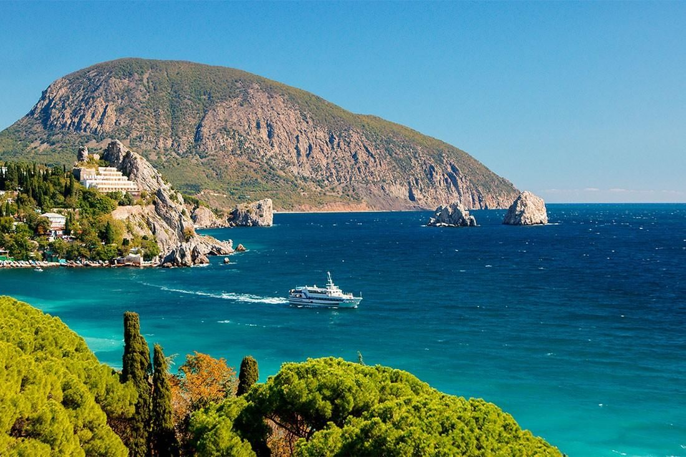
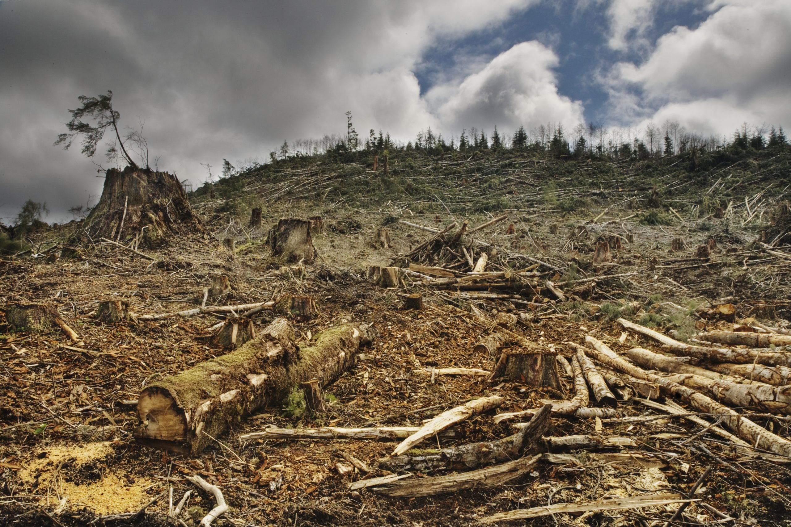
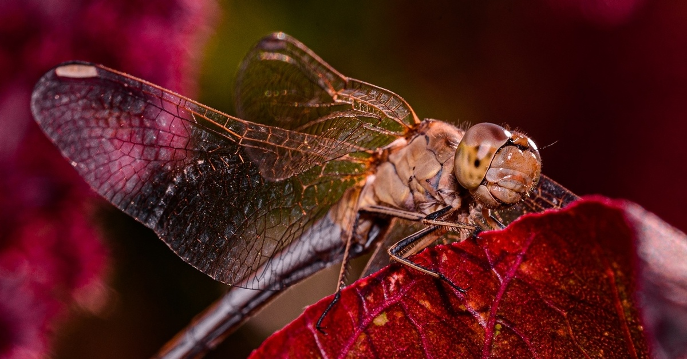
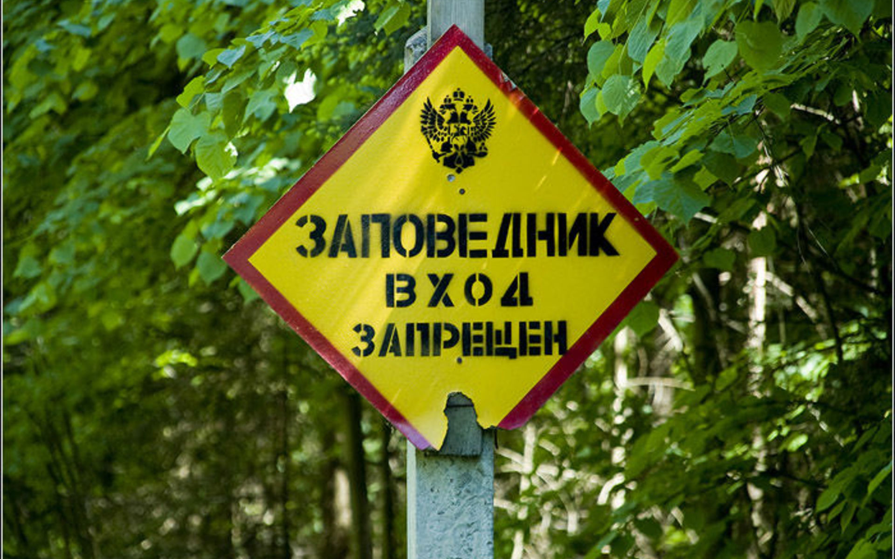
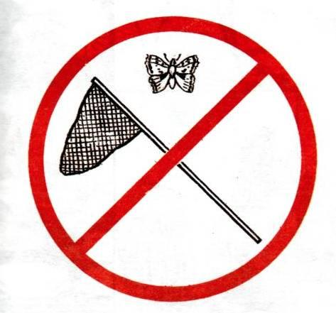
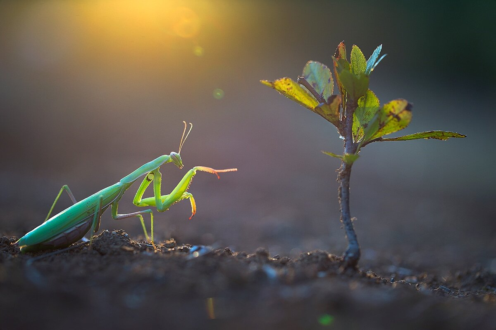

Энтомофауна Крыма — это всё разнообразие насекомых, обитающих на территории полуострова. Крым — уникальный уголок природы, где встречаются и европейские, и азиатские виды, а также много редких и даже эндемичных насекомых, которых больше нет нигде в мире. Насекомые играют важнейшую роль в жизни природы. Они опыляют растения, без них не могли бы существовать ни луга, ни сады, ни леса. Они разлагают остатки растений и животных, очищая окружающую среду. Многие птицы, ящерицы и млекопитающие питаются именно насекомыми. Поэтому исчезновение даже одной группы может повлиять на всю природную цепочку.

К сожалению, в последние десятилетия численность насекомых в Крыму значительно сократилась. Причин много. Одна из главных — это уничтожение их естественной среды обитания. Всё больше мест застраивается, вырубаются леса, осушаются болота, распахиваются степи. Там, где раньше были цветущие поля и рощи, появляются дороги и здания, а вместе с ними — шум, свет и загрязнение. Для насекомых такие изменения часто становятся фатальными — они просто не могут выжить в новых условиях.

Ещё одна серьёзная проблема — использование химикатов в сельском хозяйстве. Пестициды и удобрения, которые применяются для борьбы с вредителями и повышения урожая, вредят и полезным насекомым. Страдают бабочки, пчёлы, жуки и другие, даже те, кто не наносит никакого вреда людям. Иногда в таких зонах погибают целые популяции. Кроме того, химия накапливается в почве и воде, и последствия её действия могут ощущаться годами.
Климат тоже влияет. В последние годы в Крыму наблюдаются более жаркие и сухие лета, а весна и осень стали менее предсказуемыми. Насекомые чувствительны к температуре, влажности и даже к количеству света. Многие из них не успевают адаптироваться к изменениям, и это приводит к снижению численности или даже исчезновению видов.
Также некоторые редкие виды страдают из-за коллекционеров. Например, красивые бабочки, жуки и другие насекомые часто становятся "трофеями". Люди ловят их, чтобы продать или пополнить личную коллекцию. Это особенно опасно для редких и малочисленных видов.

Для того чтобы сохранить энтомофауну Крыма, необходимо принимать серьёзные меры. Один из главных способов — это создание особо охраняемых природных территорий, сокращённо — ООПТ. Это такие зоны, где строго запрещена любая деятельность, способная навредить природе. В Крыму есть несколько заповедников и заказников: Крымский природный заповедник, Карадагский, Опукский, Казантипский, Ялтинский горно-лесной заповедник и другие. В этих местах охраняются не только насекомые, но и растения, птицы, млекопитающие и сама природа в целом.

На ООПТ запрещена вырубка деревьев, распашка земли, строительство и тем более сбор или уничтожение животных. Это помогает сохранить среду обитания насекомых. Там, где есть охрана и нет вмешательства человека, популяции восстанавливаются гораздо быстрее.
Ещё одна важная мера — это охрана конкретных видов. Многие насекомые занесены в Красную книгу России и Красную книгу Республики Крым. Это значит, что они официально признаны редкими или находящимися под угрозой исчезновения. Среди таких видов — махаон, парусник Подалирий, жук-олень, скарабей, а также многие виды ос, пчёл и бабочек. Есть и эндемики, например, крымская земляная оса или крымская медоносная пчела, которые не встречаются больше нигде на Земле. Такие насекомые нуждаются в особой защите, их нельзя ловить, продавать или уничтожать.

Важную роль в охране природы играет наука. Учёные-энтомологи проводят наблюдения, изучают, где и в каких количествах обитают насекомые, как они реагируют на изменения в окружающей среде. На основе этих данных разрабатываются меры по защите. Иногда создаются специальные программы для восстановления численности редких видов. Например, создаются участки с нужными растениями, где насекомые могут питаться и размножаться.
Не менее важно и экологическое просвещение. Людям нужно объяснять, почему важно беречь даже самых маленьких обитателей природы. Это можно делать через уроки биологии, эколого-просветительские кружки, экскурсии в музеи, лекции и даже просто посты в интернете. Чем больше человек будет понимать, зачем нужны насекомые, тем меньше будет вреда от человеческой деятельности.
Также каждый из нас может внести свой вклад. Например, не использовать химию в саду или огороде, не ловить бабочек или жуков ради интереса, высаживать цветы, на которых любят сидеть пчёлы и бабочки. Можно участвовать в акциях по защите природы, помогать местным экоорганизациям, рассказывать друзьям и родным, почему важно беречь окружающий мир.
Защита энтомофауны Крыма — это не только забота учёных и государственных организаций. Это общее дело всех людей, которым не безразлична природа. Без насекомых не будет полноценной жизни на Земле. Они — маленькие, но очень важные обитатели планеты, и наша задача — сделать всё возможное, чтобы сохранить их для будущих поколений.
